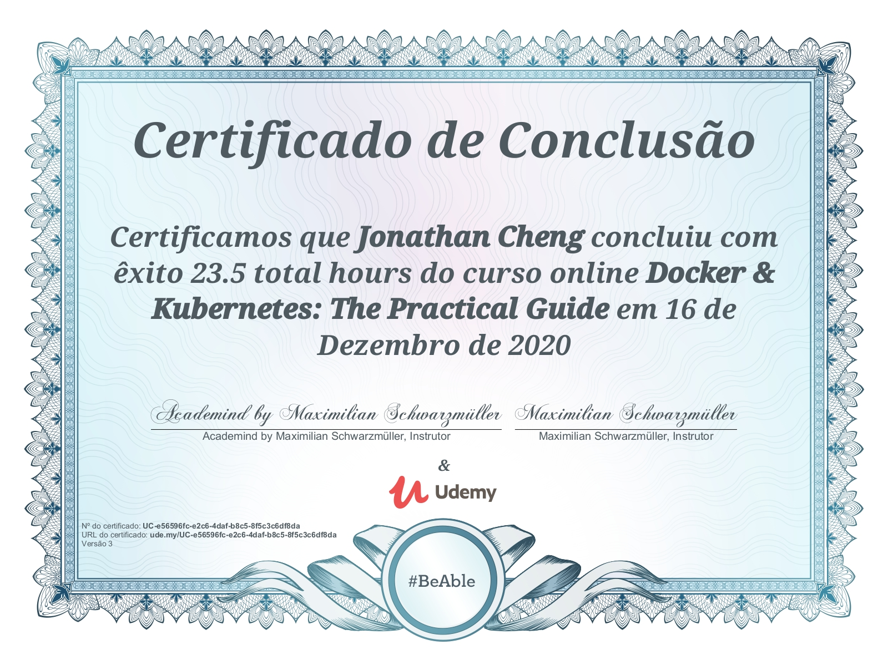
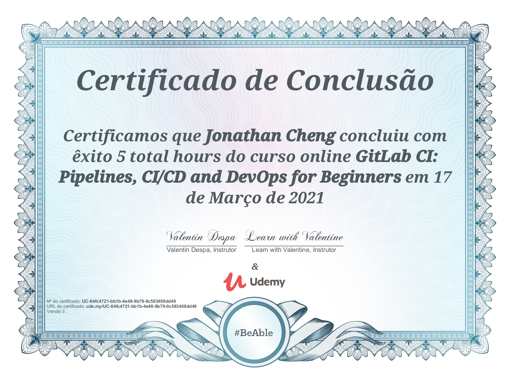
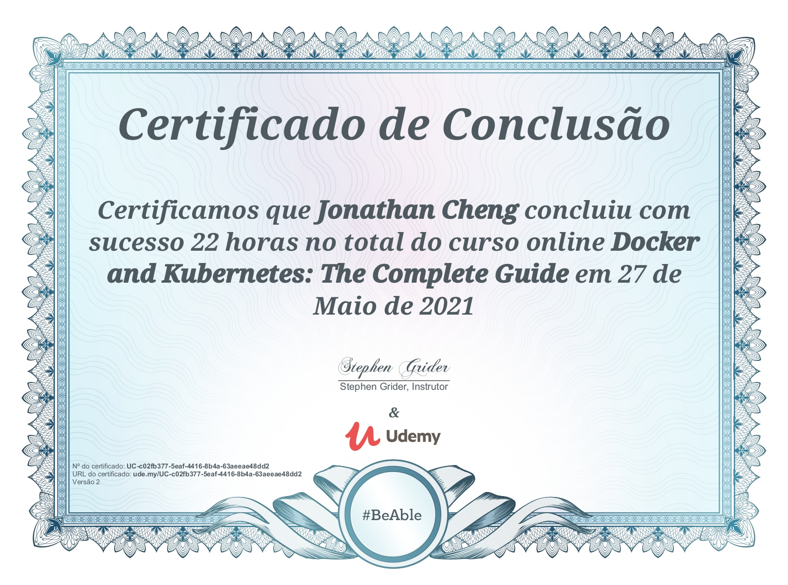
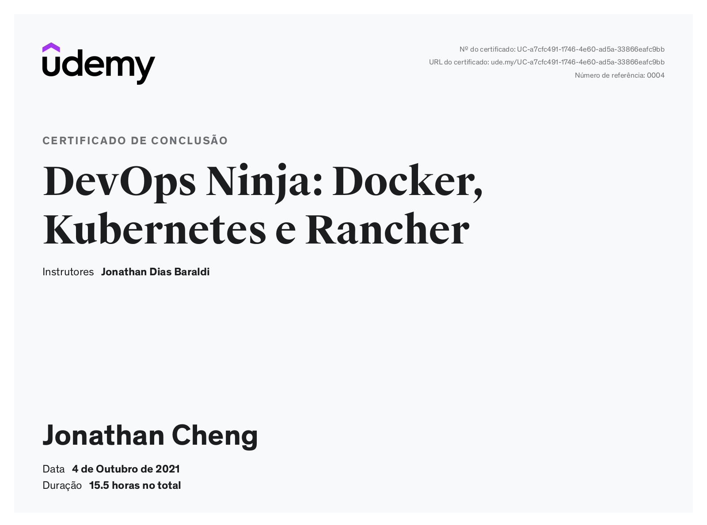
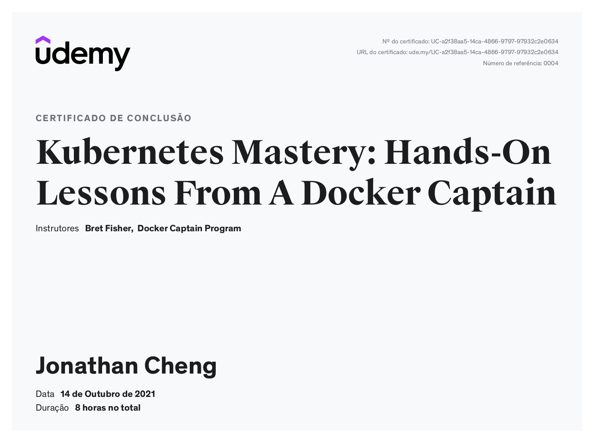

Kubernetes Sample in GCP - Developer Notes





Acquired knowledges:
- Docker: concepts (container, image, volume, lifecycle), CLI, BuildKit, multi-stage build, cross-platform (ARM), networking, registries, Compose, containerd
- Kubernetes (K8s) overview: core architecture & concepts/terms, objects (kind), production landscape, devops checklist
- K8s kubectl (core CLI): config (contexts), cluster-info, namespaces, describe, logs, imperative commands (e.g. create)
- K8s YAML specs: syntax, declarative deployments, linting & --server-dry-run
- K8s deployment flow: create/update setup, rolling updates (history, undo, patching), shutdown, canary deployment
- K8s networking: model overview (DNS, CNI plugins), Service (load balancing), Ingress (Nginx/Traefik), SSL/TLS (cert-manager), NetworkPolicy
- K8s volumes: storage classes, persistent volumes (emptyDir/hostPath/CSI types), persistent volume claims, access modes
- K8s coding resources: Cronjob, ConfigMap+Secrets, DownwardAPI, probes (types, issues handling), rolling updates, autoscaling (HPA), Kustomize, LimitRange
- K8s infrastructure: Helm, Longhorn (volumes), Kubeless (serverless), Harbor (repositories)
- K8s cluster monitoring: Graylog, Prometheus+Grafana, Istio
- K8s cluster cost management: Kubecost
- Rancher: cluster creation/import, UI features, users & permissions management, legacy pipeline feature
- GitLab: CI/CD concepts (pipeline types, artifacts, builder, caching), DinD, multi-runners + shared runner cache, branching strategies, GitLab CE setup, Auto DevOps
- AWS: IAM, VPC, EC2, EBS, ECS, ELB, EFS volumes, MongoDB Atlas integration
- GCP: IAM, ComputeEngine (preemptibility+scheduling), GKE, VPC, domains
- Full-cycle live update: local source -> GitHub -> TravisCI -> DockerHub -> GCP production URL
- Extras: chaos engineering, etc.
Tools:
- Shell: Windows Terminal (WSL2), shpod
- Edit: VSCode, nano
- Check: Chrome Console, Postman, Docker for VS Code extension
- Cluster: Docker Desktop (WSL2), minikube, GKE, K3s (AWS), microk8s
COMMIT_SHA: %%COMMIT_SHA%%